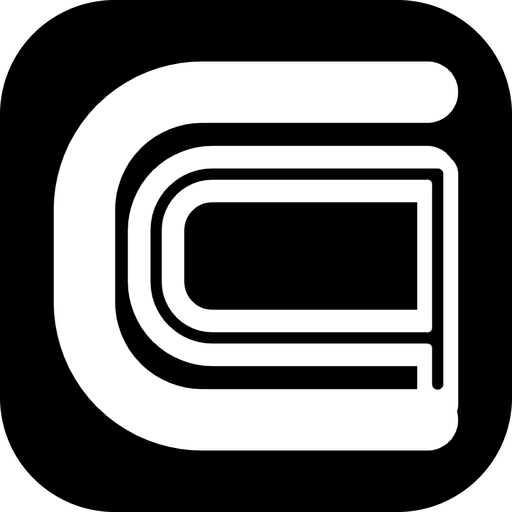
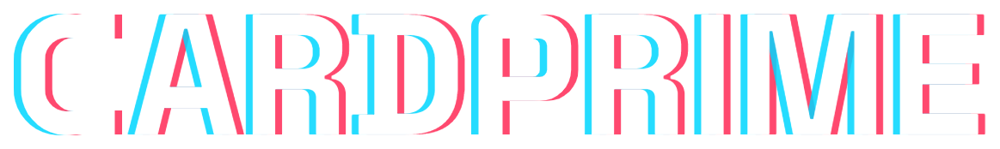
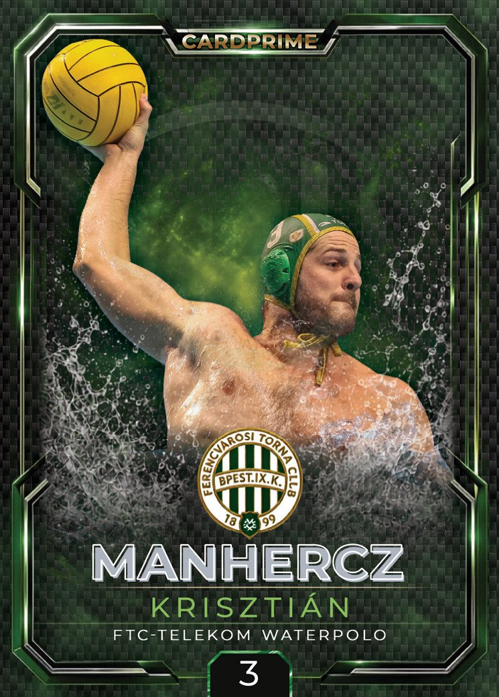
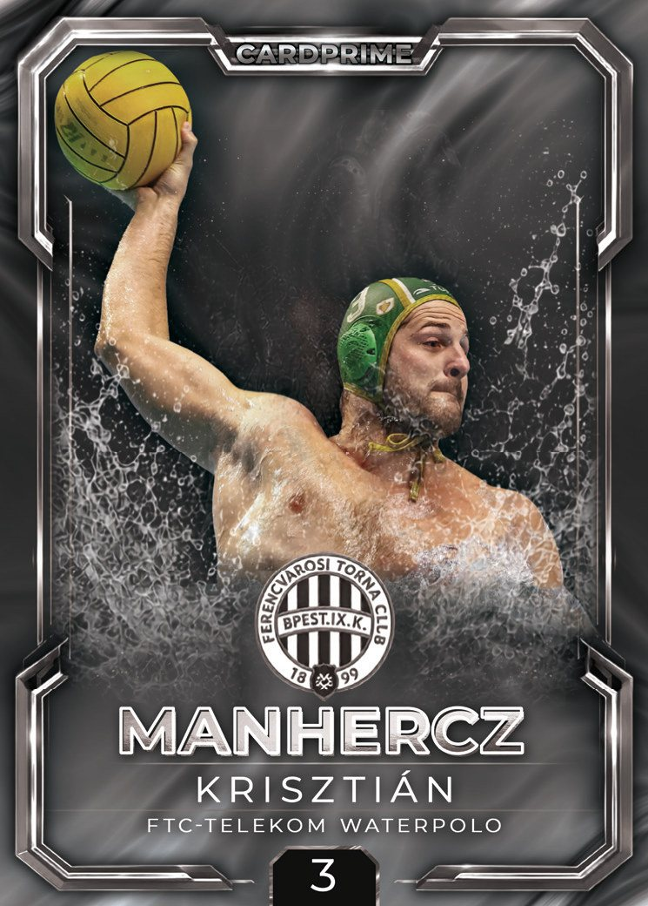
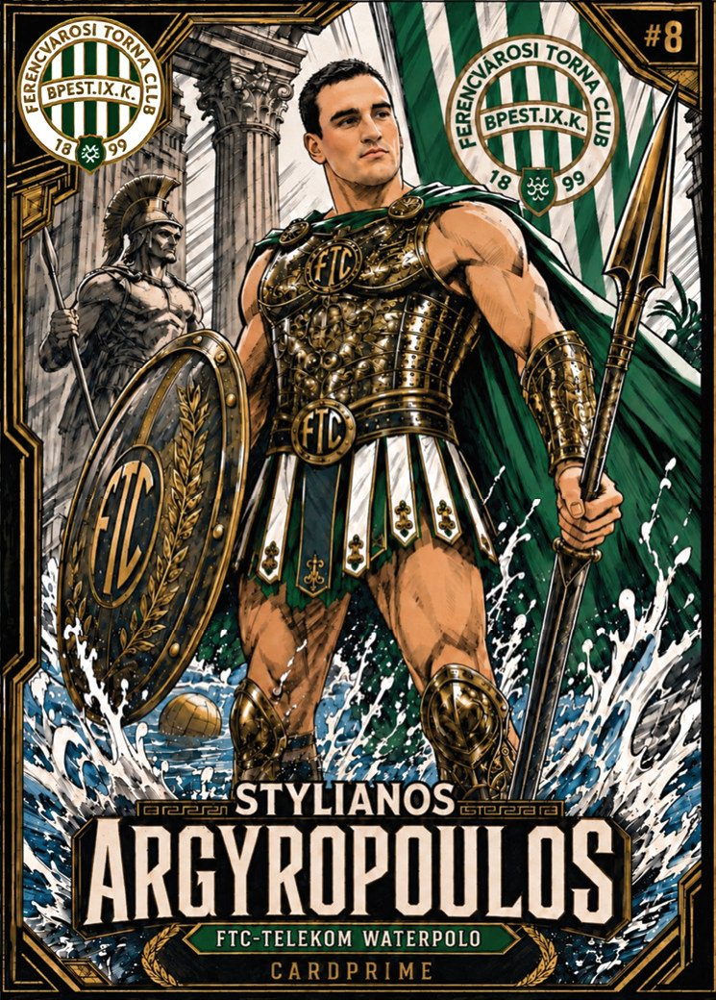
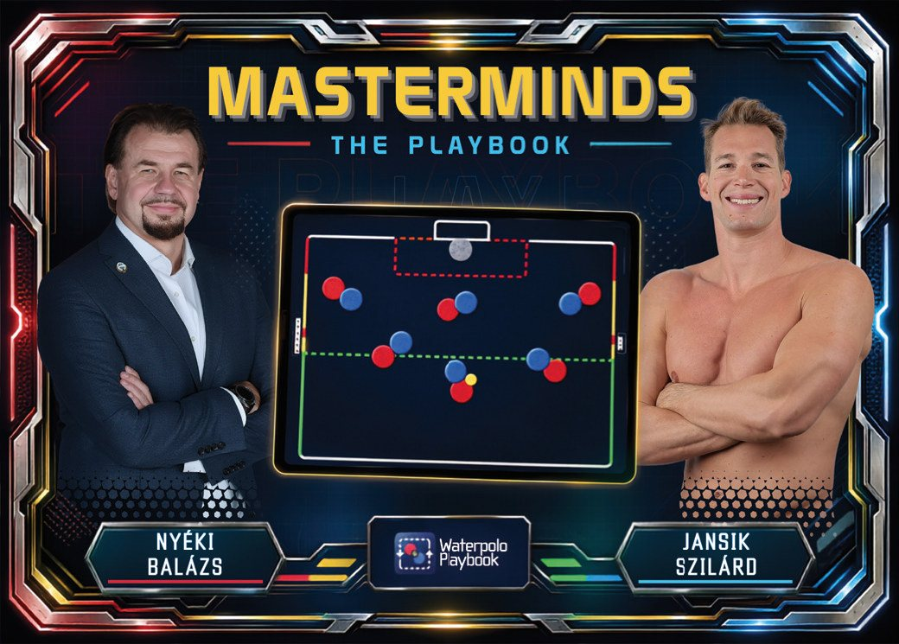
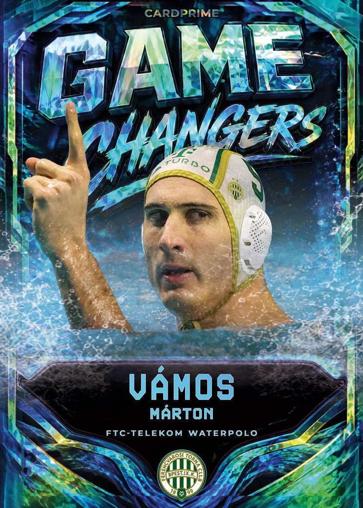
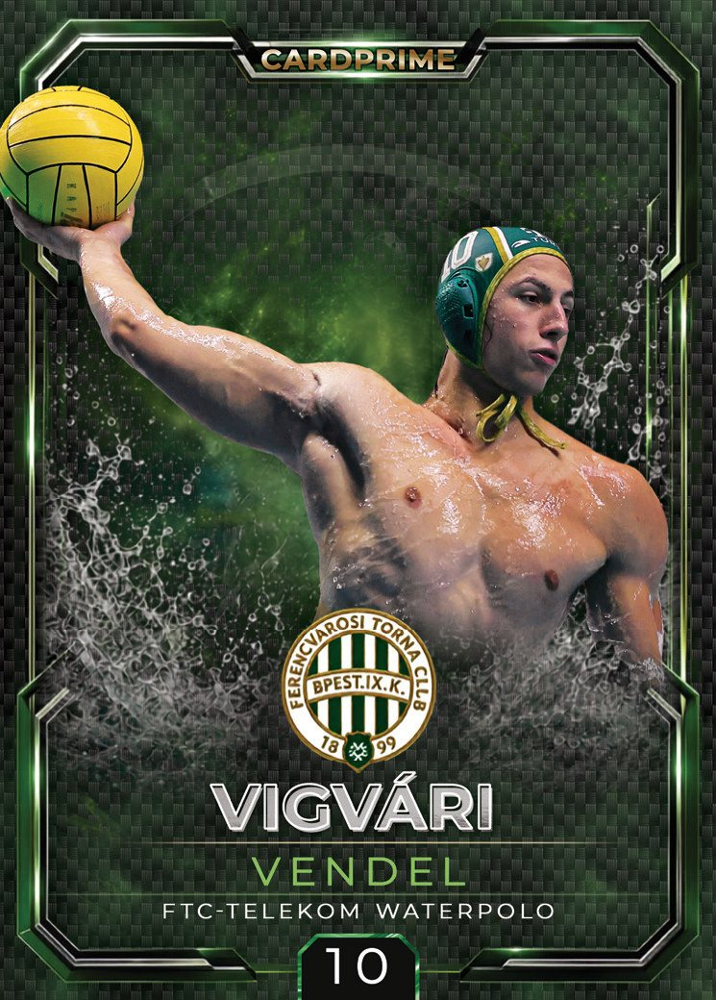
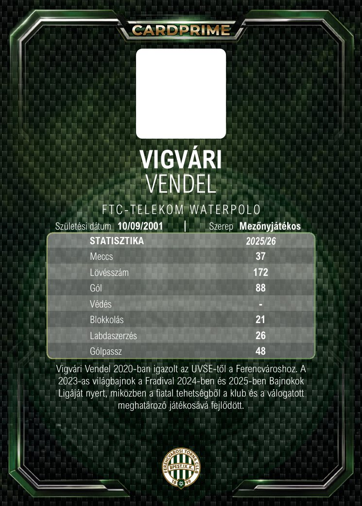

Base.
Every card starts here. One player, one design, and room for many versions.


CardPrime prints its own range of sports cards, sold in sealed packs in our shop.
Same card, four finishes. Watch the light.
Every card starts here. One player, one design, and room for many versions.
The same player, illustrated another way. A new finish, a new look.
Limit the print run and number every copy. The fewer there are, the more each one is worth.
Add a signature and the same card becomes one of a kind.


Inserts tell the story of your players and your team.



Turn it over: stats, bio and club identity, laid out as carefully as the front.


The CardPrime app helps collectors identify and manage their collections by photographing and cataloging each card.
Shoot the card with your phone and add its details by hand.
Player, set, parallel. Everything you own in one place.
Every card stays private until you switch on the public catalog for it.